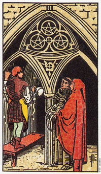

【关键词】 合作 协调 计划 荣誉 才干
一位雕刻师正在教堂里面辛勤工作，他的身旁站着一个修士和一个修女，正在给他出谋划策。从他们聚精会神的讨论，看来合作得很愉快。星币三经常代指团队工作。团队中每个人目标必须共同一致，不能想干什么就干什么，一定要先经过计划，并在实施过程中，要经过多次讨论。所以，星币三也经常代表沟通，协调。图中显示出雕刻师已经雕刻了一部分花纹，他的技艺已得到了修士和修女的赞赏，所以，星币三也代表因专业能力得到的赞扬与荣誉。
推测：在感情上，星币三可能表示工作团对中培养起来的恋情，也可能暗示双双把重心都放在了金钱与地位，而缺乏情感交流。
星币三暗示，透过研究、学习，或者将构想付诸实现，而改善自身的境遇。
在星币三当中，有一位雕刻家或石匠(左)、一位牧师(中间)和一位建筑师或旅行者(右)。当技艺工人在施工的时候，牧师和建筑师则在检阅教堂的蓝图。
这张牌结合了空气(谨慎画出蓝图)、水(这座建筑在心灵上的目的)和火(为建筑教堂而付出的体力)的元素，其目的是制造某些有形的、确实的和属于土的东西(教堂本身)。
这3颗星币形成一个直立的正3角形(火的标志)，而它的下方有一个倒立的3角形(水的象征)，里面有一朵花。这火的3角形让我们明白精神的价值，而水的3角形则鼓励我们要和周遭的人们分享这些价值，遵循我们的信仰来生活，而不要执迷于那些高高在上而遥不可及的理想。
这张牌代表扎根于稳固的基础上，建立某些具有持久价值的东西。也许你是在建造一栋房子，开始学习一个对你有助益的课程，或为稳固的两性关系或生意打基础。
星币三对自我发展而言是张正面的牌。在一副牌中，当他和教皇或圣杯七一起出现时，可能象征因为学习或理念的落实，是的精神或心灵的发展即将开始。
大体上的意义
星币三表示去作某些将可以改善你环境的事情的一段时间。它可能时开始一个课程、阅读书籍，或如果它是出现在事业的分析中，那就是你在工作当中学习拥有一个机会去建立某种具有永久价值的东西。
在健康的分析方面，3暗示你正在学习有关健康的课题，以及要长期维持下去需要些什么。为了长远的报偿而建立稳固的基础，也是这张牌所显示的意义。
正位含义：
1.业务熟练，有一流水准。
2.有才能，超出一般人。
3.完成了一件奋斗已久的大事。
4.注重名声，有荣誉感。
逆位含义：
1.水准不高，难让人满意。
2.想法不成熟，难实施。
3.有一定的物质损失。
两性关系上的意义
星币三可以表示你在建立及维持一段两性关系的努力。你可能正在阅读有关两性关系的书，学习两性关系的互动，更努力与经营现有的伙伴关系，或正在治疗导源于先前两性关系而残留的问题。它意味着你正在建立某种持久的两性关系，或透过努力来改善某个两性关系。
倒立的星币三
星币三的倒立意指你忽略，或浪费了透过学习或研究而使自己提升的机会。它也可能暗示，由于你没有完成某种学习的课程，或是太快就放弃了，而无法让自己进步。
在询问某一项他即将开展的课程时，乔治翻到了这张3的倒立。我告诉他，如果他想完成这项课程的话，他就必须要更加努力。他大声地抗议道，他已经够努力了，然而最近六个月他错过了一些考试，有一个科目被当掉了，而且有很多课程他都没去上。上了八个月的课之后，他开始对这个为期一年的课程感到无聊，于是他出现了一个念头，与其去完成它，还不如计划去旅行。
星币三倒立可能意味着，没有从某种状况中得到教训，导致这种状况周而复始的出现。例如，你可能会有一连串的两性关系都是在同一种状况下结束的。如果你不能从第一个两性关系中得到教训，并负起你应付的责任的话，你就会一直冒着重复这种模式的危险，知道你领悟了其中的教训为止。
就一般事情的角度来看，星币三的倒立暗示着，这并不是你第一次经历这种状况。你需要反躬自省，想象自己能从这种情况得到什么教训，如此才能在将来避免重复犯错。从这张牌也看得出来，当事人对将某事付诸实行的恐惧。它同时也意味着某种一成不变的状态，例如一件工作，或一段关系的停滞不前。为了将来，你可能需要先打下稳固的基础。
在事业的分析方面，3的倒立可能暗示教学。因为学习的反面就是教学。如果在一副牌中，这张牌和节制一起出现的话，就更能证实这种看法了。